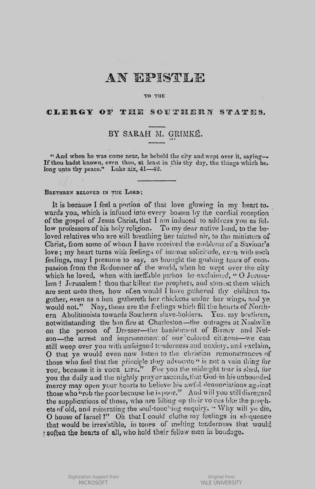
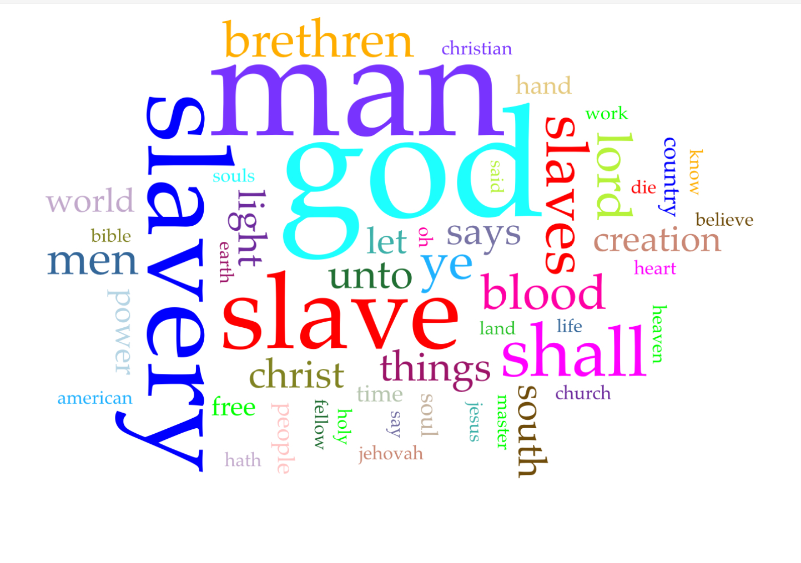

An Epistle to the Clergy of the Southern States

| Categorie | Dati | ||||||
|---|---|---|---|---|---|---|---|
| Autrice: | Sarah Moore Grimké | ||||||
| Temi: | Abolizione della schiavitù, principi cristiani, immoralità della schiavitù | ||||||
| Descrizione: | Epistola rivolto al clero del sud per sostenere l'incompatibilità dell'istituzione della schiavitù con i principi cristiani e incoraggiare la sua abolizione. | ||||||
| Destinatario: | Clergy of the Southern States | ||||||
| Anno di pubblicazione: | 1836 | ||||||
| Formato: | Libro, 20 pagine | ||||||
| Lingua: | Inglese | ||||||
| Luogo: | America | ||||||
| Archivio di provenienza: | Yale University | ||||||
| Copyright: | Public Domain | ||||||
| Digitalizzato: | Microsoft | ||||||
| Scarica: | PDF EPUB | ||||||
Analisi Voyant
Voyant è un ambiente web per la lettura e l'analisi di testi digitali. Fornisce un'analisi della frequenza con cui i lemmi ricorrono all'intero di un testo: si tratta pertanto di uno strumento molto utile per comprendere i temi centrali di un'opera. L'immagine qui riportata rappresenta graficamente le ricorrenze semantiche delle An Epistle to the Clergy of the Southern States
Analisi Voyant
Argomento del libro
...